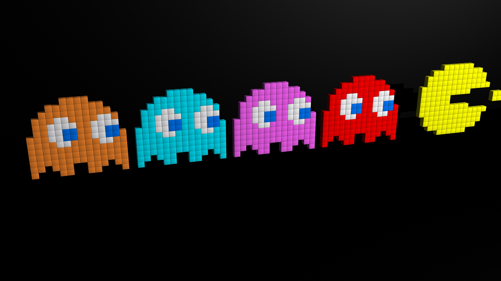

Super Mario Bros.
Considerado um clássico, Super Mario Bros. foi um dos primeiros jogos de plataforma com rolagem lateral. O jogo foi um dos mais vendidos de toda a história dos videogames

Pac-Man
Produzido originalmente para Arcade no início dos anos 1980, tornou-se um dos jogos mais jogados e populares do mundo!